I
Afro House
Percussion-led, vocal, generous. The lane that fills a beach terrace without asking anyone to move.
DJ · Producer · Music Curator
Warm, patient, built for long evenings. A set that starts with the sunset and knows where it wants to be at two in the morning.
Percussion-led, vocal, generous. The lane that fills a beach terrace without asking anyone to move.
Long arcs, piano chords, harmonies that hold the room. Where the productions live.
Slow, textured, downtempo at heart. Sundowners, private dinners, the hour before the room turns.
A decade on the decks, the last four years across Dubai's most demanding rooms. Residencies, not one-offs.
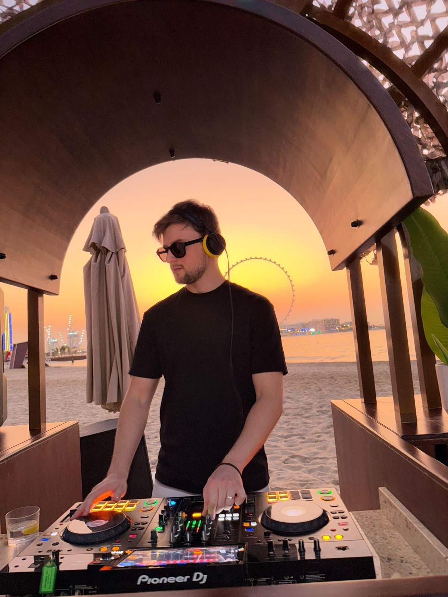
December 2025, Yas Marina Circuit. Main stage and the official podium stage on final-race day, opening ahead of Adam Port. The biggest room in the region, and the set held it.
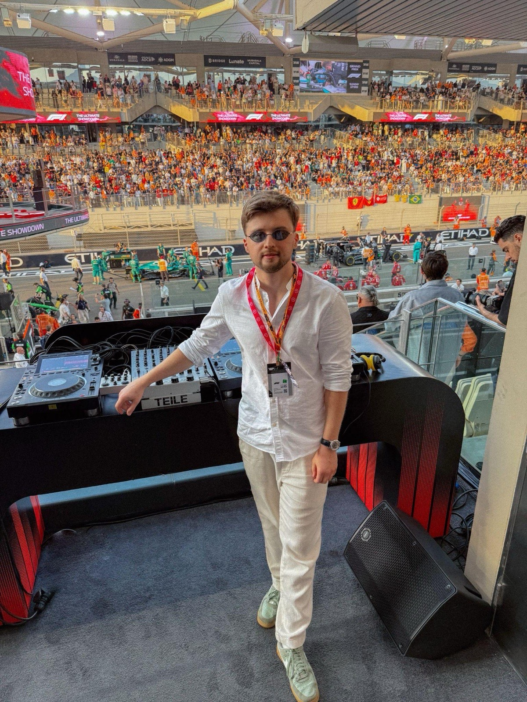
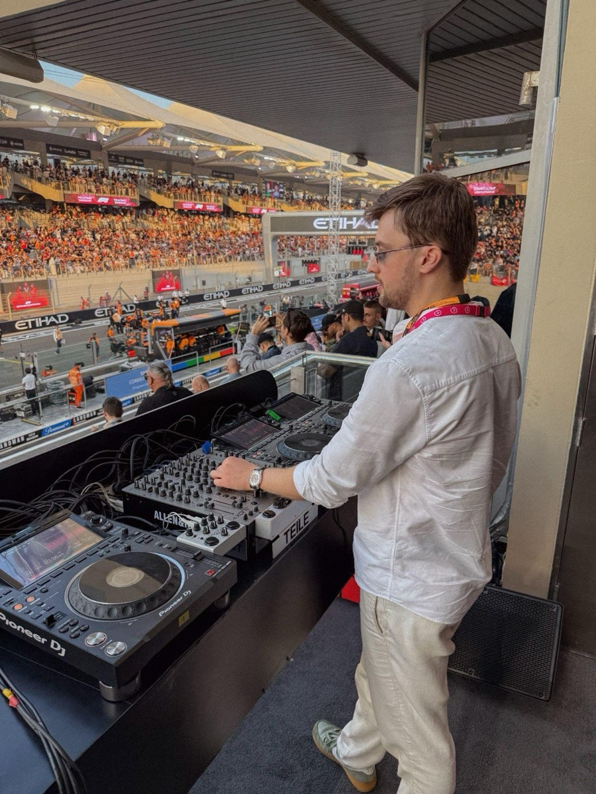
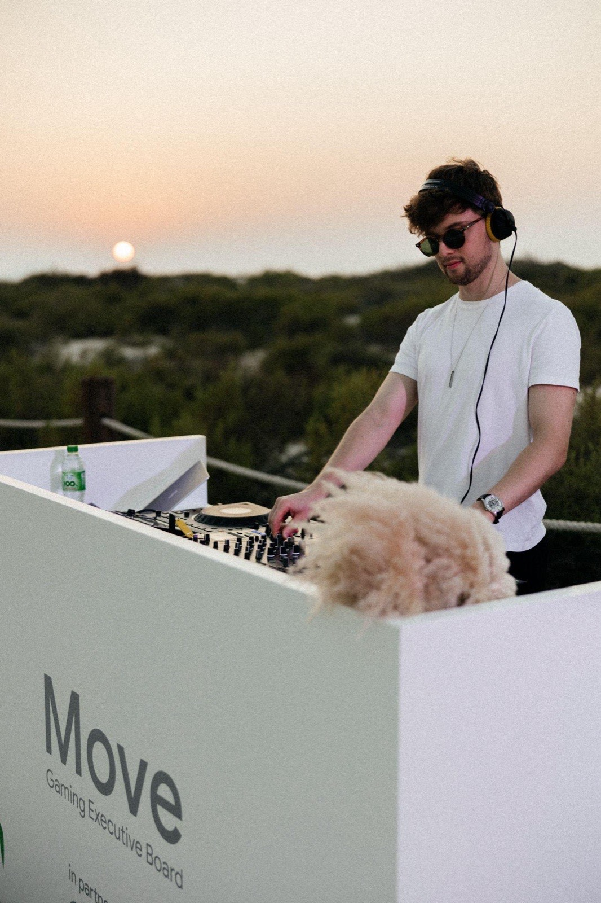
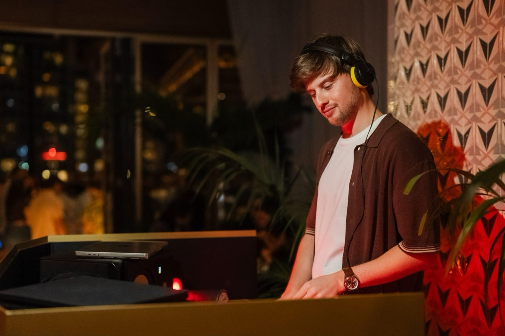
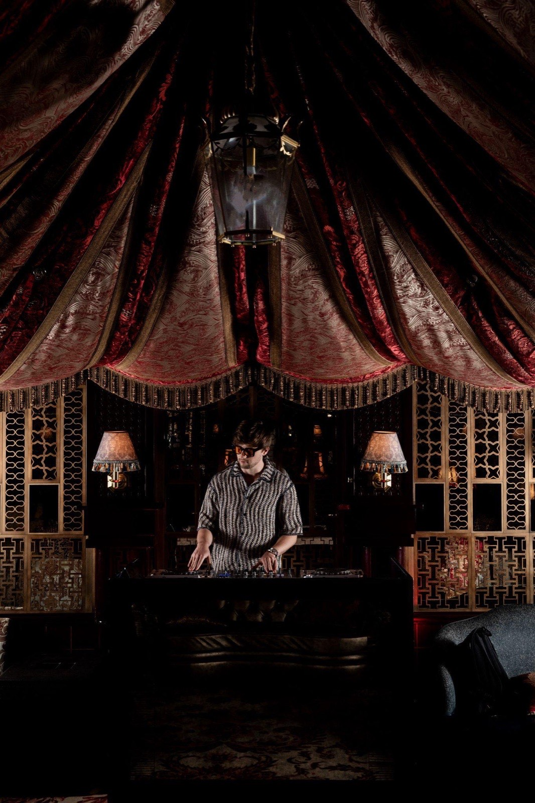
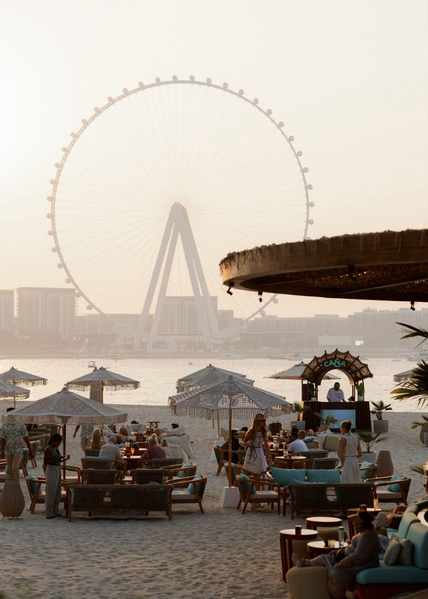
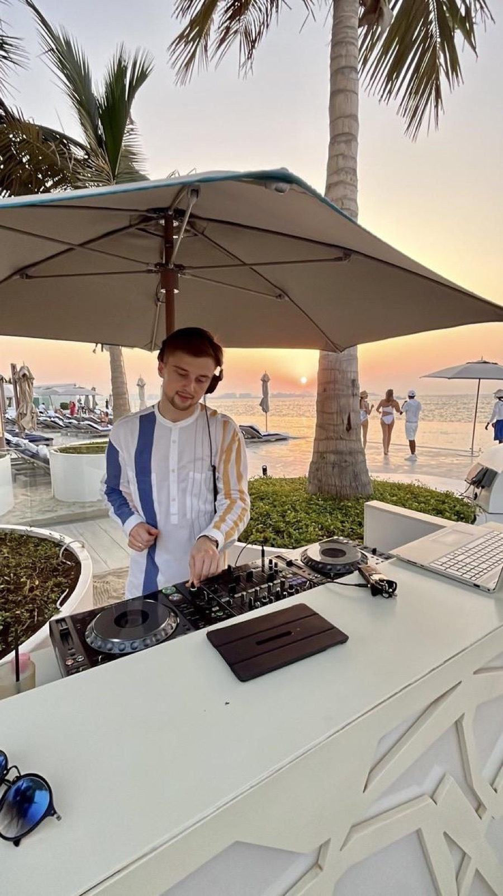
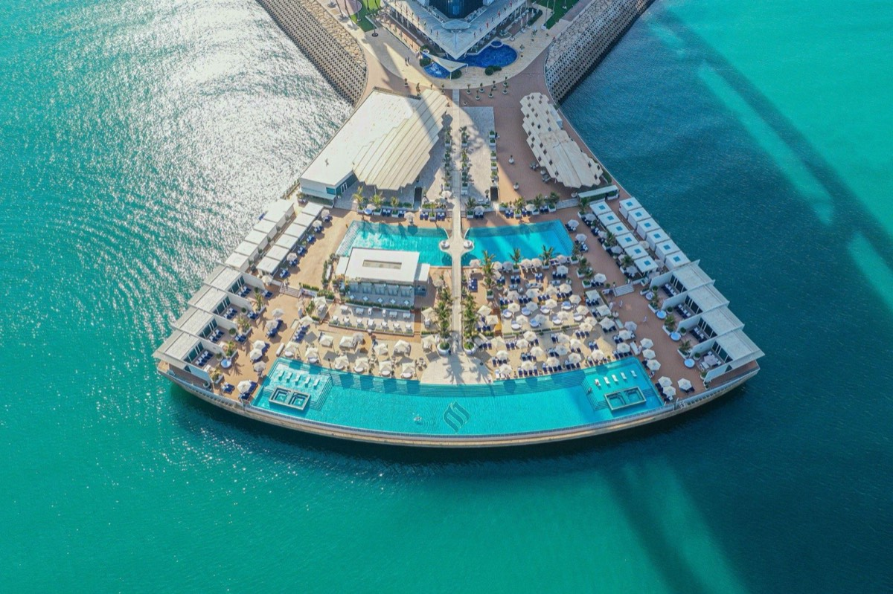
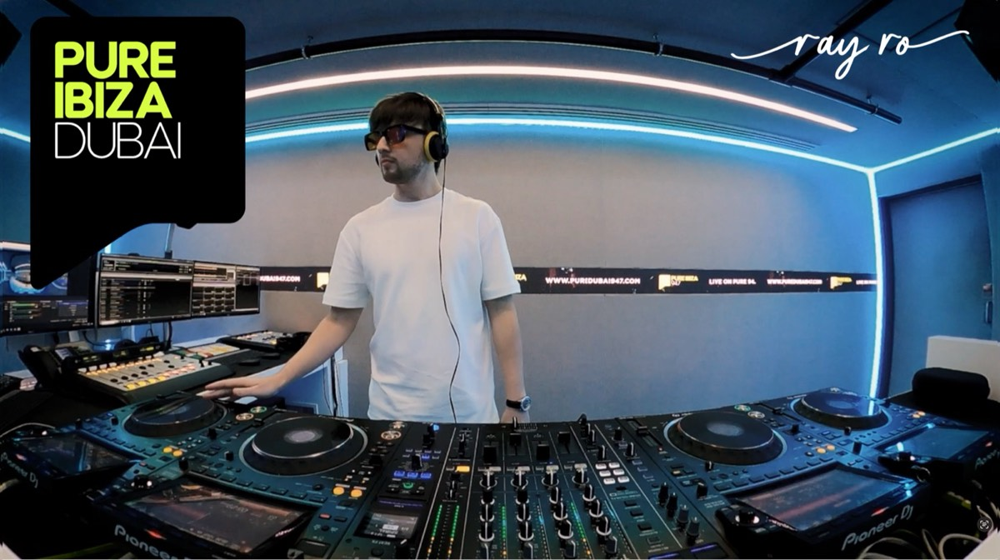
A venue's sound is a decision, not a playlist. I build the musical identity of a room from brunch to last call: the daypart arc, the resident line-up, the rules for what never gets played.
Verified Spotify artist. Support from BLOND:ISH and Francis Mercier. Releases with Mudra and ZĒL; forthcoming on Switch Lab, Wish You Were Here, NoFace and Timeless Moment.
Afro House, Melodic House and Indie Dance, with Organic House for sunset and early-evening slots. Sets are built around the room: a slow, warm arc for beach clubs and terraces, more energy for club nights and late events. He also produces his own tracks and edits, which keeps the sound distinct from a standard playlist DJ.
Music curator and DJ at Caña Beach (The Ritz-Carlton, JBR) since 2022, music curator at Rüya (The St. Regis, The Palm), resident DJ at LY-LA (Alaya, DIFC) since 2024, former resident at SAL (Burj Al Arab), plus S Bar & Privilege at SLS Dubai. Events include the F1 Abu Dhabi Grand Prix 2025 main and podium stage opening for Adam Port, the UFC Fan Zone in Abu Dhabi, Google × Abu Dhabi Gaming (Move 2025), a Marriott global event at St. Regis The Palm and the Global Citizen Forum in Ras Al Khaimah.
Yes. Residencies are the core of his work: weekly or seasonal resident DJ slots, sunset sessions and full music direction for a venue (daypart programme, guest DJ curation, background music identity). Hospitality groups, F&B directors and entertainment managers can email bookings@rayrosound.com with the venue, days and time slots.
Yes, across Dubai, Abu Dhabi and the wider UAE, and internationally on request. Typical formats: sunset cocktail and dinner sets, wedding after-parties, brand launches, gala and corporate events, villa and yacht parties. Send the date, venue, guest count, set length and the mood you want, and you will get a reply within 24 hours.
Fees depend on format, set length, date and location: a two-hour sunset set at a Dubai venue is priced differently from a festival stage or a destination event abroad. Share the details by WhatsApp or email and a quote comes back within a day. Residencies are quoted per month or per season.
USB performance on Rekordbox. Standard rider: two Pioneer CDJ-3000 (or CDJ-2000NXS2) linked via Pro DJ Link, a Pioneer DJM-V10, DJM-A9, DJM-900NXS2 or DJM-750MK2 mixer, a stable booth with 220–240V power and at least one high-powered booth monitor. The full technical rider is on page 19 of the EPK.
Based in Dubai, United Arab Emirates. Available across the GCC (Abu Dhabi, Saudi Arabia, Qatar, Bahrain, Oman) and for destination bookings in Europe, Asia and beyond. Recent sets outside the UAE include a sundown session in Sveti Stefan, Montenegro.
WhatsApp +971 58 582 0397 or email bookings@rayrosound.com. Bookings are handled by his manager, Sviatlana Leonava. Include the date, venue, time slot and format; the EPK and tech rider are available on this page.
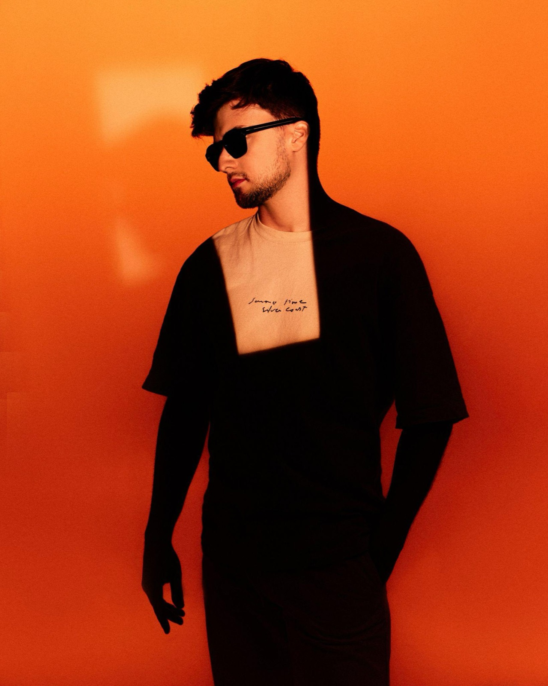
Residencies, guest sets, private and corporate events. UAE, GCC and beyond. Managed by Sviatlana Leonava.
Dubai DJ for hotels, beach clubs, weddings, brand and corporate events. Reply within 24 hours.